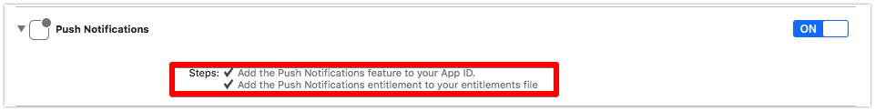

푸시 인증서 발급받기
iOS에서 Push 기능을 사용하기 위해서 Push Certificate, 푸시 인증서가 필요합니다. 푸시 인증서를 발급받는 방법은 개발 인증서 발급과정과 비슷합니다.
Apple Developers
애플 개발자센터에 로그인합니다.
+ 버튼을 눌러줍니다.

개발용 인증서 발급페이지와 동일합니다. 빨간색으로 표시한 부분이 Push 인증서입니다.
개발용 인증서와 마찬가지로 Development(개발용)와 Production(앱스토어용) 으로 분리되어 있으며 필요에 따라 생성하면 됩니다.
우선 Development용을 발급받습니다.

어떤 앱의 Push 인증서를 만들 것인지 선택합니다.

CSR(Certificate Signing Request)가 필요하다는 안내 페이지입니다.
CSR발급은 앱 인증서 발급 과정을 참고해주세요.
iOS Application 개발 시작하기 - 1 (개발자 등록, 인증서 등록)

CSR파일을 선택하고 Continue 버튼을 클릭합니다.

Push인증서 발급이 완료되었습니다. 같은 과정으로 Production환경의 Push인증서도 발급받습니다.
1 | 참고로 Push 인증서는 앱 인증서처럼 개발 맥북에 등록하여 사용하는 것이 아닙니다. |
프로비저닝 재발급
지난번 프로비저닝 발급 포스트(iOS Application 개발 시작하기 - 1 (개발자 등록, 인증서 등록))에서 프로비저닝에는 Certificate 정보가 포함된다고 소개했습니다.
따라서, Push를 위해 Certificate를 재발급 받았으니 프로비저닝도 재발급 받아야 합니다.
이런 귀찮음을 피하기 위해서는 앱 개발 프로젝트 초기단계에 한번에 다 발급받는 것도 방법입니다 :)

프로비저닝을 재발급 받기위해 위 페이지에 접속하면 아마 빨간색 부분이 invalid라고 뜰겁니다. 저는 이미 재발급을 받아버려서 active라고 나옵니다.
이 프로비저닝을 Delete하고 재발급 받아도 되지만 Edit 버튼으로 들어가서 Generate 해주면 자동으로 Push Certificate 가 업데이트 된 프로비저닝을 쉽게 받을 수도 있습니다.

프로비저닝 정보를 보면 Push Notifications가 추가된 것을 볼 수 있습니다.
다운로드받아서 더블클릭! 해주세요.
XCode 프로젝트 설정
이제 프로젝트 설정에 들어가서 Push를 사용하겠다고 선언해봅시다.
XCode를 열고 프로젝트 파일 -> Capabilities 탭으로 진입합니다.
네, 친절하게 Push Notifications라고 있습니다. Off -> On 으로 변경해줍니다.

지금까지 잘 진행했다면 위와 같이 2개의 체크!를 볼 수 있습니다. 프로비저닝 또는 Push 인증서에 문제가 있다면 이곳에 표시됩니다.
Push Permission 획득
이제 정말 Push가 오는지, 보낼 수 있는지 확인이 필요합니다.
AppDelegate파일의 didFinishLaunchingWithOptions 메소드에 다음의 코드를 작성합니다.
1 | func application(_ application: UIApplication, didFinishLaunchingWithOptions launchOptions: [UIApplicationLaunchOptionsKey: Any]?) -> Bool { |
Push도 위치정보, 사진정보등과 같이 Native를 활용하기 때문에 사용자의 권한 동의가 필요하기 때문에 동의를 얻는 코드입니다.
위의 코드를 넣으면 앱 실행시 사용자에게 다음과 같은 Alert으로 알람 동의를 얻습니다.
Device Token 확인
이제 디바이스 토큰 확인을 위해 AppDelegate파일에 didRegisterForRemoteNotificationsWithDeviceToken 메소드를 오버라이드 합니다1
2
3
4func application(_ application: UIApplication, didRegisterForRemoteNotificationsWithDeviceToken deviceToken: Data) {
let tokenString = deviceToken.reduce("", {$0 + String(format: "%02X", $1)})
print("deviceToken: \(tokenString)")
}
시뮬레이터에서는 다르게 동작할 수 있습니다. 정확한 테스트를 위해 실제 디바이스에서 진행해주세요.
device token을 확인하기 위해 console에 tokenString을 출력하도록 해봅니다.

앱을 실행하고 Push 권한을 허용하면 콘솔창에 위와 같은 로그가 찍힙니다.
APN Easy Provider
이제 Push 테스트를 진행합니다. AppStore에서 APN easy Provider를 설치해줍니다.
이렇게 생겼습니다.

Add Tokens.. 버튼을 눌러 전 단계에서 얻었던 Device Token을 등록합니다.

Device Token 입력 후 Confirm을 선택합니다. Name은 아무거나 등록해주세요.
다음은 2.Choose Certificate File 을 클릭합니다. 여기서는 애플 개발자센터에서 생성한 Push Certificate를 등록해야합니다.
애플 개발자센터에서 다운받은 Push Certificate 파일을 더블클릭하면 키체인 접근에 등록이 됩니다.

인증서를 오른쪽 버튼으로 클릭 후 ~~~ 내보내기를 선택합니다. 파일 확장자를 .cer로 하여 편한 위치에 내보냅니다.
이제 다시 APN Easy Provider에서 방금 내보내기로 만든 .cer 형태의 Push certificate를 선택합니다.
그리고 3. Connect to:를 클릭합니다. 우측의 드랍다운메뉴는 gateway.sandbox.push.apple.com을 선택합니다.

apple의 apn server에 연결되면 Status에
1 | Connecting to gateway.sandbox.push.apple.com |
라고 뜹니다. 이제 Push 테스트 환경 구축이 끝났습니다.
Push Noti의 타이틀과 내용을 작성 후 5. Send APN 버튼을 눌러봅니다.
쨘!
실제 프로젝트에 적용하려면
위 과정은 앱에 Push기능을 넣고 제대로 동작하는지 과정일 뿐입니다.
실제 프로젝트에서 Push를 적용하기 위해서는 앱들의 디바이스 토큰을 관리하고 푸시를 발생시킬 서버를 필요로 합니다.
서비스의 로직에 따라 적절한 타이밍에 적절한 Push Noti를 발생시키는 것은 이제 서비스의 역할입니다.
다음포스트에서는 Firebase를 활용하여 프로젝트에서 Push를 활용하는 방법을 소개합니다.